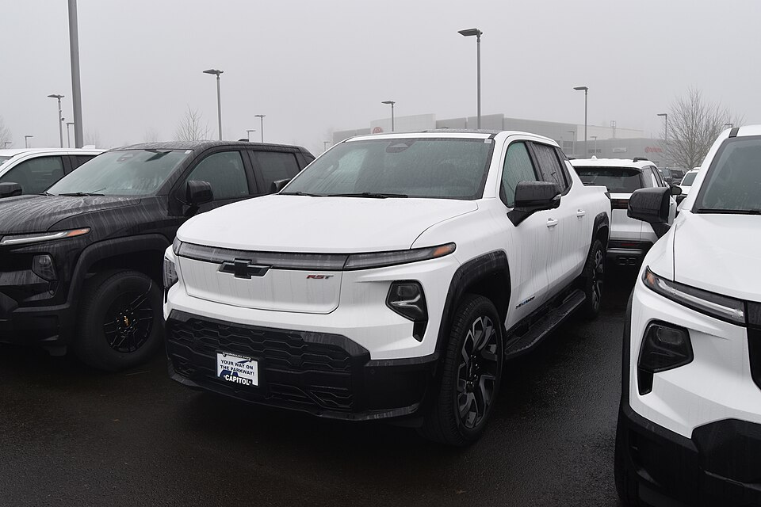
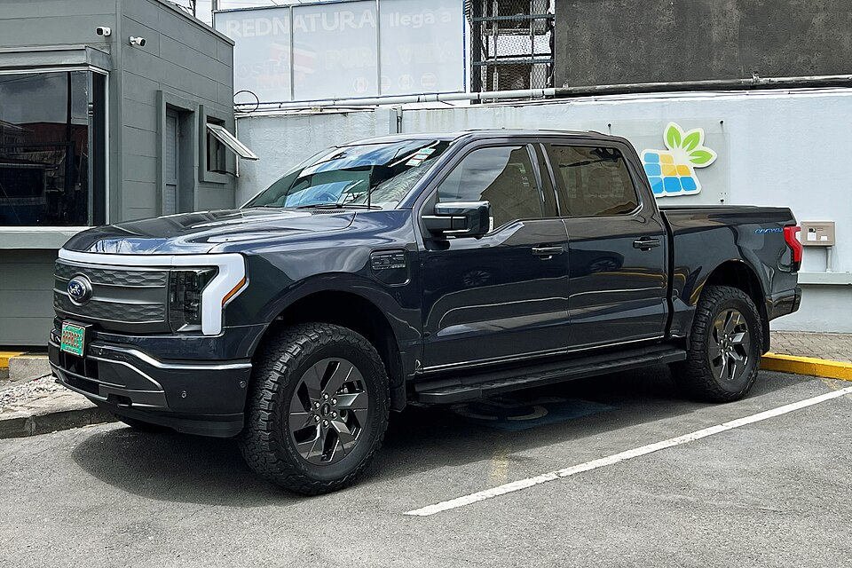
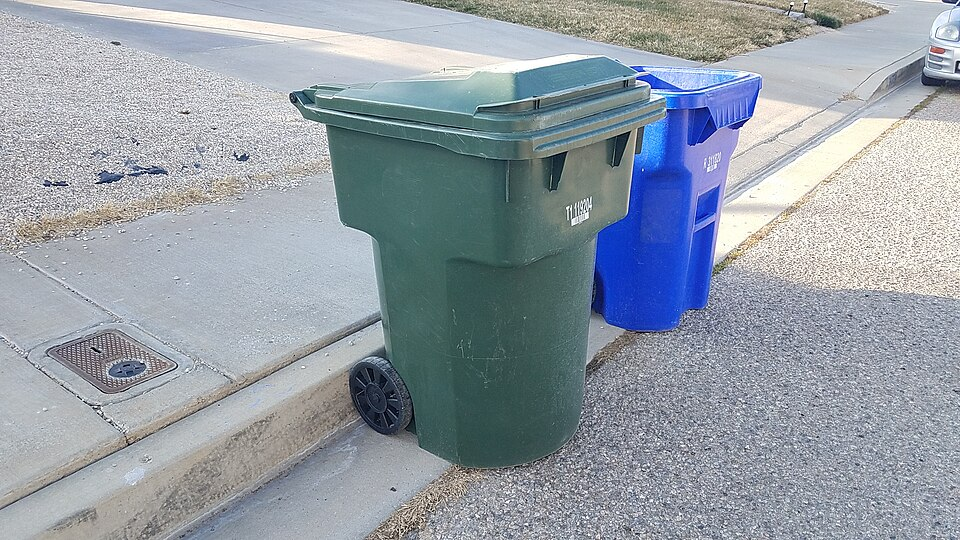

Truck, trailer, tipper, carts
The whole launch setup is off-the-shelf parts: a used electric pickup, a contractor dump trailer, a cart lifter taken from the garbage-truck world, and standard carts. The one custom job is mounting the lifter on the trailer so it can dump over a 4-foot wall.
Tow vehicleRecommended: Silverado EV. Counterpoint: F-150 Lightning.




| Silverado EV Recommended | F-150 Lightning Counterpoint extended range + Max Trailer Tow | |
|---|---|---|
| Price, used | ~$55–60k (2024 RST, ~28k miles) | ~$35–45k (estimate; check listings) |
| Towing | 10,000 lb. 2025+ Work Truck and LT with Max Tow: 12,500 lb. | 10,000 lb. Standard-range trucks: 7,700 lb at most, so Trailer A only. |
| Payload | ~1,300–1,500 lb | ~1,500–2,200 lb depending on trim (Pro/XLT most, Platinum least) |
| Pulls Trailer A / B? | Yes / yes | Yes / yes. B loaded is ~7,600–9,100 lb with tipper and tarp. |
| Battery | ~200 kWh | 131 kWh |
| Customers per truck, winter, overnight charge only both carts on the same day | ~550–585 | ~240–355 |
| …with a 45-min midday charge at Richmond (125 kW) | ~680–800 | ~580–755 |
| Power out (runs the tipper) | Up to 10.2 kW (GM "PowerBase") | 9.6 kW (Ford "Pro Power Onboard") |
| Commercial license? | No. ~10,000 lb truck rating + 14,000 trailer ≈ 24,000. | No. ~8,300–8,600 lb + 14,000 ≈ 22,500. |
| Built-in tracking | OnStar | FordPass / Ford Pro telematics |
| Four-wheel steering | Available. Believed standard on the RST, so confirm on the window sticker. | Not offered. Ford's Pro Trailer Backup Assist (a knob that steers the trailer when reversing) is available on some trims. |
| Watch | Large RST wheels make winter tires expensive | Ford ended the fully electric Lightning in late 2025. Parts are fine for years, but resale value is weaker. |
Customer limits come from the routing planner at 600–1,200 customers with 3,500 lb loads, 1.2 kWh/mile towing, a 15% reserve, and a winter setting of +35% driving energy plus 4 kW of cab heat. Weights are the manufacturers' ratings. Check the door-jamb sticker on any truck before buying.
How to choose
- Why the Silverado: its ~200 kWh battery covers a full winter route day on one overnight charge, so no daily fast-charging stop, fee or unhitching. It has four-wheel steering for tight turnarounds, and room to grow before a second truck.
- The case for the Lightning: it's ~$15–25k cheaper. With a midday charge at Richmond on most route days, it comes close to the Silverado. The cost is ~$15–20/day in public charging plus an unhitch/rehitch. Two cheap trucks later also give a backup when one is in the shop.
- Get four-wheel steering if possible. The rear wheels turn with the fronts at low speed, so the truck turns much tighter. That helps on dead-end roads, cul-de-sacs, narrow driveways and tight dump-site lanes, where a truck and trailer otherwise need a three-point turn. Test-drive it with a trailer attached: check how rear steering behaves when towing, and practice backing, since the truck pivots differently.
- Midday charging, if needed: Richmond's ChargePoint by I-89 Exit 11 has two 125 kW stalls. Charge right after a dump run, with the trailer empty (light, no smell, quick to unhitch), ~5 minutes each way with an electric tongue jack. Ask the owner before leaving a trailer in the lot.
Two trailer sizesBoth are standard bumper-pull dump trailers with a 12 V hydraulic lift
| A · Standard: 7×12, 10,000 lb rating | B · Large: 7×14, 14,000 lb rating Recommended | |
|---|---|---|
| Sides | 4 ft, or 2 ft steel plus 2 ft removable extensions | 4 ft steel |
| Empty weight | ~2,800–3,200 lb | ~3,900 lb |
| Volume | ~12 cu yd | ~14.5 cu yd |
| Trash per load | ~1.4–1.9 tons, fills by volume | ~1.6–2.2 tons, fills by volume |
| Stops per load (60 lb each) | ~45–60 | ~55–70 |
| Price, new | ~$7,500–9,500 | ~$9,500–10,500 |
| Paperwork | Rated 10,000 lb or less: the simplest registration, and never a commercial-license question | Probably needs a USDOT number and inspection. Still no commercial license. |
| Examples | Big Tex, Sure-Trac, Load Trail 10K dumps (compare empty weights) | Griffin 7×14 4', Big Tex 14LP-14-P4 |
Loose residential trash weighs about 225 lb per cubic yard (EPA's conversion table; 150–300 for mixed trash), maybe up to 300 once it settles in the trailer. So both trailers fill up by volume long before they reach the truck's weight limits. Scale tickets at Williston will give us our real number. The routing page defaults to 3,500 lb per load. Set it to what the scale tickets show. Source: EPA volume-to-weight conversion factors.
How to choose
- Choose A if the tow vehicle is a standard-range Lightning (7,700 lb), if registration simplicity matters most, or if routes are close to Williston so extra dump runs are cheap. It weighs less empty, which helps the RST's small payload.
- Choose B in most cases. Because trash fills the box by volume first, B's extra 2 ft is about 10 more stops per load. Even full, it stays at ~7,000–8,000 lb, well inside the RST's 10,000 lb towing limit. That matters most for routes far from Williston (Hinesburg, Richmond), where each extra dump run costs 30+ miles and 45+ minutes.
- Decide on real numbers: run a month with A, weigh loads at the scale, and count dump runs. If more than about a third of route days need a third Williston run, B is worth it.
Split trailer: trash and recycling in one visitFuture plan. A variant of Trailer B, modeled on the split-body garbage trucks Myers already runs here
Split-body garbage trucks divide the body lengthwise, and each side is emptied separately: trash at the transfer station, recycling at the recycling facility. We can copy that on a dump trailer with three changes: a lengthwise divider, a flap on the tipper that sends each cart to the correct side, and heavier-duty barn doors so one side can be dumped while the other stays shut.
How a load gets emptied
- At the recycling facility, open only the street-side door and tip. The recycling side empties. The closed curb-side door holds the trash side.
- Lower the box, close the door, and drive to Casella's transfer station, also in Williston.
- Open the curb-side door and tip. Sweep the trash side before leaving.
Dump recycling first, while the heavier trash side keeps the load over the axles. The second stop adds ~15 minutes per load, which is built into the planner.
Is it worth it? What the route planner says
| Winter, one overnight charge | Trash only | Alternate weeks | Split trailer, both carts |
|---|---|---|---|
| Customers per Silverado | ~1,100–1,150 | ~550–750 | ~700–1,000 |
| Customers per Lightning | ~580–680 | ~400–450 | ~425–640 |
| Miles per 2 weeks, 1,200 customers | 777 | 1,319 | 1,030 |
| Dump runs per 2 weeks, 1,200 customers | 26 | 38 | 40 |
With recycling included, the split trailer serves roughly 25–35% more customers per Silverado than alternate weeks. Driving between houses happens once instead of twice, which saves ~22% of the miles. Part of the gain goes to more frequent dump runs, since each side is half a box, and to the second stop at the recycling facility. The split is set 60/40 because trash is heavier per stop (60 lb versus 20 lb), so both sides fill at about the same time. Change it on the routing page.
Ranges come from planner runs at 600 and 1,200 customers, scattered across the four towns. The same winter settings as the tow vehicle table. Recycling is assumed at 20 lb per pickup, with a full trailer holding ~1,800 lb because it's bulky.
What it takes
- Divider: steel plate welded to the floor and front wall, braced, and sealed at the floor so recycling doesn't leak under. Adds ~300–400 lb.
- Barn doors: heavier hinges and a latch rated to hold one full side while tipped. That's a fabricator's call.
- Diverter flap at the top of the tipper mast: a hinged chute, moved by hand with a lever or by a small hydraulic cylinder on the tipper's pump.
- Tarp covering both sides. Carts in two lid colors so the driver never guesses.
- Cost: roughly $3–7k on top of the tipper (estimate). Ask the fabricator to quote it alongside the plain version.
Recommendation: launch with alternate weeks on a plain trailer, which is simpler and proves the routes. Build the split version as the second trailer once past ~300–400 customers, when the capacity gain starts to matter. The plain trailer then becomes the backup and the bulky-item trailer.
The cart tipperNo off-the-shelf trailer has one, so we have one built
No bumper-pull dump trailer is sold with a cart tipper already on it. Our build draws on these existing parts:
- Garbage-truck cart lifters, such as the Bayne GRL 1110 / 1115. They're hydraulic, handle 32–96 gal carts, and bolt to a truck's rear hopper. They're designed to dump over a hopper edge about 4 ft high, not a 6.5 ft trailer wall.
- Trailers with built-in tote lifters. Travis Trailer's Organics Trailer Tote Dumper is a self-loading, self-dumping trailer for food-waste totes. It proves the idea of a lifter on a trailer.
- Stand-alone "high-dump" can dumpers (for example Vestil, and others) empty carts into dumpsters at higher heights. Their mast and carriage are the closest match to what we need.
- Used lifters come up on Trash Trucks Online.
The build: a truck-equipment or welding shop mounts a high-lift cart lifter on the curb side, just ahead of the axles, bolted to the frame rail and the side stake pockets. Budget ~$4–8k with a used lifter, and ask for a quote. The rear stays clear for the dump gate.
How it fits togetherDrawn to scale: 1 ft = 20 px. Viewed from the curb side, with the truck heading left.
Why the curb side: the driver works from the curb, away from traffic, and the rear stays clear for dumping. Why just ahead of the axles: the lifter (~400–700 lb) and the trash pile both sit over the axles instead of on the hitch, which keeps tongue weight inside the pickup's small payload. A pendant control or a button on the mast runs the cycle. With 240 V from the truck, the pump runs quietly, which is the point of this company.
Won't the trash pile up in one spot?
Yes. A fixed tipper drops every cart in the same place, and loose trash doesn't level itself. Left alone, the pile reaches the top of the wall under the tipper while the ends of the box are still empty. That wastes a third or more of the volume, and a pile at the front puts too much weight on the hitch. What we'll do:
- Mount the tipper mid-length, just ahead of the axles (as drawn). The pile starts in the middle of the box, over the axles, and has room to spread both ways.
- Tilt the box a little every ~20 stops. Raising the dump bed a few degrees with the rear doors shut lets the pile slide back and flatten. Then lower it and keep going. It takes seconds and uses the hoist the trailer already has. Test how far it can go before anything shifts against the doors.
- A deflector plate at the top of the lift (the same idea as the split trailer's flap) throws each cart's contents toward the far side or the back instead of straight down.
- Keep a long-handled rake for the corners at the end of a load, used only from the ground or a fixed step, never climbing into the box.
- What garbage trucks do instead: a hydraulic packer blade pushes each load back and compacts it. That's a compactor body, which is exactly what we're avoiding at this size. If the tilt-and-deflector approach wastes too much space, that's the signal to look at the NRR-EV compactor option.
Test this during the trailer trial: count stops per load with and without the tilt, and weigh loads at the Williston scale.
GPS trackersUndecided. For theft protection and for showing customers where the truck is.
The truck already has one. The Silverado EV comes with OnStar, which reports location, speed, ignition and battery level. GM's fleet service, OnStar Vehicle Insights, puts that on a dashboard with alerts for a monthly per-vehicle fee (GM doesn't publish the price, and the first two months are free). Getting the data out to our own software goes through GM partners. It isn't built for a one-truck company writing its own app. It's good for theft recovery, but awkward for a live map on our website.
| Option | Hardware | Monthly | How it works | Fit |
|---|---|---|---|---|
| Bouncie | ~$77 | ~$8–10 | Plugs into the diagnostic (OBD-II) port. Built-in cellular. Updates every few seconds while driving. Open API with webhooks. | Option Confirm it supports the Silverado EV's port. |
| Teltonika tracker + Traccar | ~$60–120 | ~$3–8 SIM | A wired-in tracker sends positions to free, self-hosted Traccar software. We own the data and the API. | Option Most control, more setup work. |
| Samsara / Motive / Verizon Connect | often bundled | ~$20–50 | Full fleet platforms with dashcams and driver scoring. Usually 1–3 year contracts. | Option More than we need at 1–3 vehicles |
| Trailer tracker | ~$30–150 | $0–20 | A hidden battery tracker, even an AirTag. Trailers get stolen more often than trucks. | Option Pair with a coupler lock and wheel lock |
How the tracker becomes a customer feature is on the Software page. Prices from Airpinpoint and Spytec comparisons (fleet platforms don't publish list prices) and Bouncie's site.
Dashcams and route camerasWhat haulers do, and what we need
Cameras are standard on garbage trucks. Big fleets run AI dashcams (Lytx, Samsara, Motive) that record the road and the driver and upload clips of hard braking and collisions. Many also run side and rear cameras pointed at the loading area, so they can prove a cart was out or wasn't, or was overfilled or contaminated. A newer generation puts AI cameras over the hopper to spot contamination automatically. The footage settles insurance claims and "you skipped me" calls.
| Camera | What it's for | Options | Cost |
|---|---|---|---|
| Road-facing dashcam | Collisions, insurance claims, backing incidents | A good consumer 2–3 channel dashcam (Viofo, Vantrue class) with GPS and a hardwired parking mode, or a fleet camera if the insurer offers a discount | $150–350 consumer, or $20–40/mo fleet |
| Tipper camera | A photo or short clip of every stop: cart out or not, overfilled, what's visible on top | Weatherproof camera on the tipper mast looking at the curb and the cart. A snapshot is triggered by each tipper cycle, and the "not out" button takes one too. | ~$100–300 + setup |
| Box camera (later) | What actually falls into the trailer. Catches propane tanks, bagged recyclables, batteries. | Camera looking down into the box. AI contamination detection is a later add-on. | ~$100–300 |
| Cab-facing | Driver coaching at big fleets | Skip it while the owner is the driver. If we hire, tell drivers in writing before it's turned on. | — |
Keeping footage
- Continuous recording overwrites itself on the memory card, about 1–2 weeks at a time. That's normal and fine.
- Save incidents immediately (a collision, damage, a complaint) and keep them until the claim is closed, plus 3 years, which covers Vermont's usual deadline for injury and property claims. Never delete footage after being told about a claim.
- Stop photos (tipper camera): keep 90 days, matching the privacy policy. They're tied to the customer's pickup record in our software.
- Turn off cab audio, or post a notice. Point cameras at the road, curb and cart, not into windows or houses.
Neither electric pickup has a built-in continuous dashcam we could rely on, so plan for an aftermarket unit. The tipper camera is the one that pays for itself, because it turns "you skipped me" into a timestamped photo.
CartsWhere to get them, what they cost, and whether they get stolen


| Source | Each | Notes |
|---|---|---|
| New, by the pallet: Toter, Rehrig Pacific, Cascade Engineering, Otto | ~$55–85 | Order hot-stamped with our logo and a serial number. RFID tags are optional. 4–8 weeks lead time plus freight. Toter quotes a 15–20+ year life. |
| Used or refurbished | ~$15–40 | From towns switching vendors, cart refurbishers, or Marketplace. Check lids, wheels and the lifting lip. Mixed brands all fit a standard lifter. |
| Customer's own cart | $0 | Only if it has the standard lifting lip. Most home-center carts don't. |
Do they get stolen?
Sometimes, but mostly they go missing in other ways: borrowed by neighbors, crushed by plows, knocked over by bears, or left behind when someone moves. We didn't find a published industry loss rate. Budget 2–3% replacement a year (estimate). Serial numbers (and RFID later) tie each cart to an address. Charge a replacement fee for damage the customer causes. Use bear-resistant latching lids for customers in bear areas; that's a real issue in Jericho, Richmond and Hinesburg.